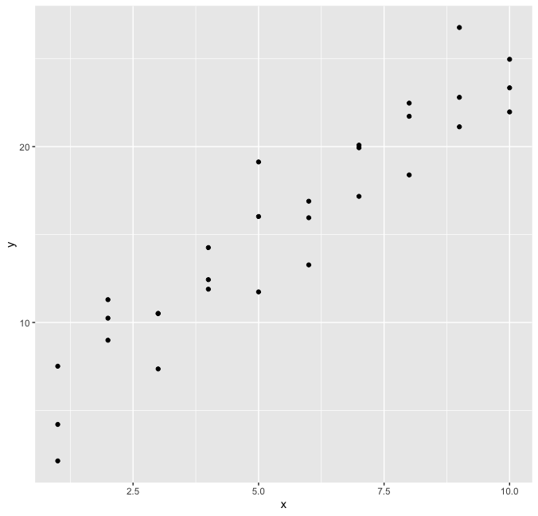
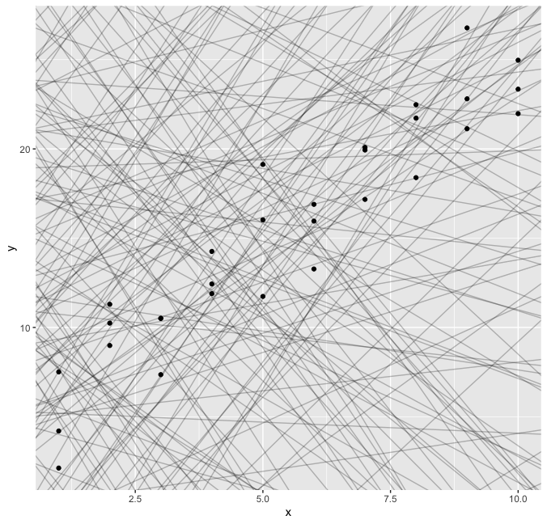
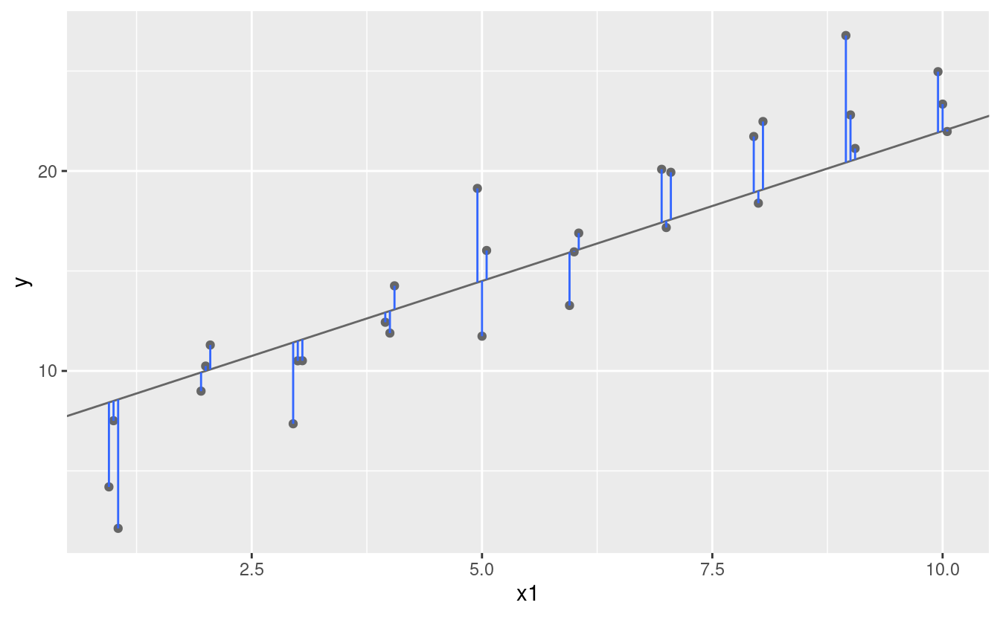

News
- All presentations will be on December 6th
- Zoom link
- The presentation order is the same
- Group 1, 2, 3, 7, 6, 8, 4, 5
- Homework 8 is replaced by a reflection paper
- I will assign what you review on my own after the presentation
Grade rubric
- 60 %: 7 homework + reflection paper
- all equal weights
- check your scores
- 30 %: Group project
- 30 %: Initial report
- 70 %: Final presentation
- 10 %: participation + attendance
Presentation
- Need to submit your slide and the coressponding codes
- Consider who's the main audience
- all know the data set
- be a serious critic
The goal of a model is to provide a simple low-dimensional summary of a dataset
Model is a kind of storyteller
Use models to partition data into
patterns and residuals
Two parts of a model
- Family of models
- express a precise, but generic, pattern that you want to capture
- Fitted model
- find the model from the family that is the closest to your data
Need to find some criteria to examine the best model
The goal of a model is not to uncover truth, but to discover a simple approximation that is still useful
- Use the modelr package which wraps around base R’s modelling functions to make them work naturally in a pipe
library(tidyverse)
library(modelr)
options(na.action = na.warn)
ggplot(sim1, aes(x, y)) + geom_point()

- Let's use a model to capture that pattern
- It looks linear
Assuming not knowing any modeling ideas,
generate the set of $(a_0,a_1)$ and
compare them against the data points
models <- tibble(
a1 = runif(250, -20, 40), a2 = runif(250, -5, 5)
)
ggplot(sim1, aes(x, y)) +
geom_abline(aes(intercept = a1, slope = a2), data = models, alpha = 1/4) +
geom_point()

- There are 250 models on this plot
- Need to find the good models by making precise our intuition that a good model is “close” to the data
- One easy place to start is to find the vertical distance between each point and the model, as in the following diagram

- This distance is just the difference between the y value given by the model (the prediction), and the actual y value in the data (the response)